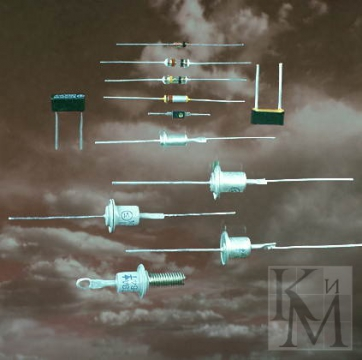

1.5.4. Применение полупроводниковых диодов
Полупроводниковые диоды являются нелинейными элементами. Поэтому они находят широкое применение в самых разнообразных устройствах нелинейной обработки аналоговых сигналов (детекторы/демодуляторы, смесители и преобразователи частоты, логарифматоры, антилогарифматоры, квадраторы, экстрематоры и др.). В таких устройствах свойства диодов могут использоваться как непосредственно при прохождении основного сигнала через диод, так и косвенно, например, при включении диода в цепь обратной связи усилителя.
Полупроводниковые диоды находят применение Во всех видах выпрямителей и стабилизаторов. Это в первую очередь: стабилитроны и стабисторы, универсальные, выпрямительные и импульсные диоды. В непрерывных компенсационных стабилизаторах они включаются в цепи получения опорных напряжений и термокомпенсации, а в ключевых стабилизаторах — еще и в цепи коммутации накопительной индуктивности и защиты ключевых транзисторов. Наиболее примечательны параметрические стабилизаторы, работа которых основана исключительно на свойствах нелинейных элементов входящих в их состав (цепи обратной связи в параметрических стабилизаторах отсутствуют), в качестве таких нелинейных элементов чаще всего используются стабилитроны и стабисторы.
В тех случаях, когда необходимо ограничить диапазон изменения какого-либо сигнала, используются устройства, называемые ограничителями. Диоды различных видов (импульсные, универсальные, стабилитроны, ограничители и др.) находят широкое применение в подобных цепях. Способность диодов проводить электрический ток только в одном направлении может быть использована в различных устройствах коммутации и логических цепях.
В настоящее время практически во всех перестраиваемых по частоте узлах электронной аппаратуры вместо устаревших механических методов перестройки используется электронная перестройка с помощью варикапов — полупроводниковых диодов с емкостью, зависящей от величины приложенного напряжения.
Полупроводниковые диоды иногда также используются в качестве основных элементов генераторных и усилительных узлов. Являясь в большинстве своем чисто пассивными компонентами, они просто не могут выступать в роли источника тока или напряжения, необходимых для любого генератора или усилителя. Однако существует достаточно немногочисленный ряд случаев, когда при применении полупроводниковых диодов определенных типов (туннельные диоды, диоды Ганна, лавинно-пролетные диоды, параметрические диоды) возможно построение диодных усилительных и генераторных схем.